Explore destinos incríveis
Clique nos itens abaixo para ver fotos exclusivas de cada destino.

🏙️ São Paulo — Cultura, gastronomia e vida urbana
 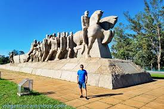
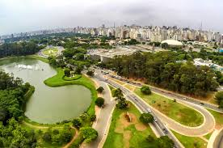
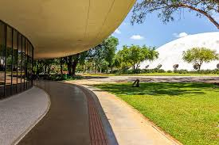
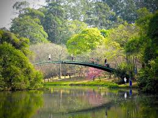
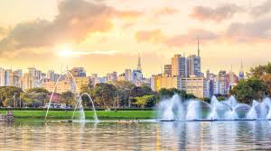
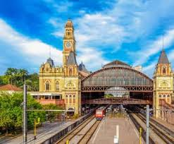
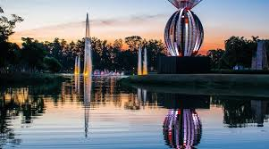
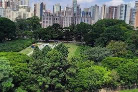
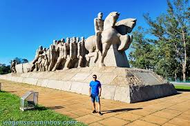
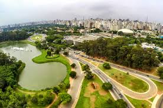
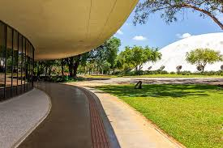
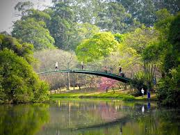
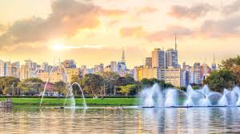
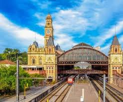
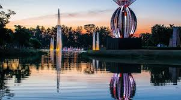
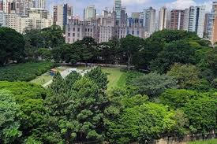
📸 Galeria de Destinos
Galeria de Destinos
Alguns dos melhores momentos capturados pelos nossos viajantes ao redor do Brasil.
Sobre a Viagem Brasil Experience
A Viagem Brasil Experience nasceu com um propósito simples: mostrar que viajar pelo nosso país pode ser tão emocionante quanto explorar qualquer destino internacional. Aqui, cada roteiro é criado com cuidado, bom humor na medida certa e a missão de transformar sua viagem em uma experiência memorável.
Somos apaixonados por destinos brasileiros, da calmaria de Arraial do Cabo aos cenários grandiosos de São Paulo, passando pelos refúgios naturais de Ilha Grande e a energia vibrante de Búzios.
Nossa equipe acredita que viajar não é luxo — é qualidade de vida. Se você busca profissionalismo, criatividade e aquele atendimento “pode deixar que a gente resolve”, então seja bem-vindo!